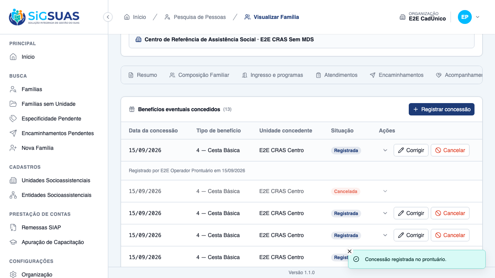
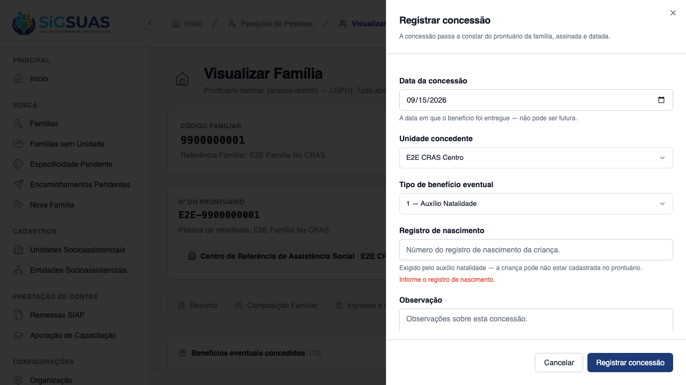
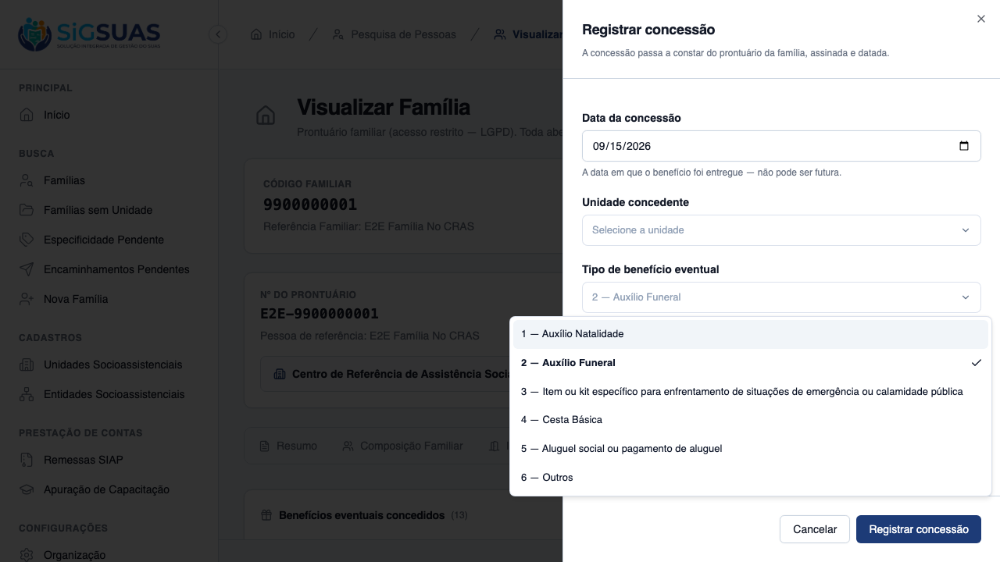
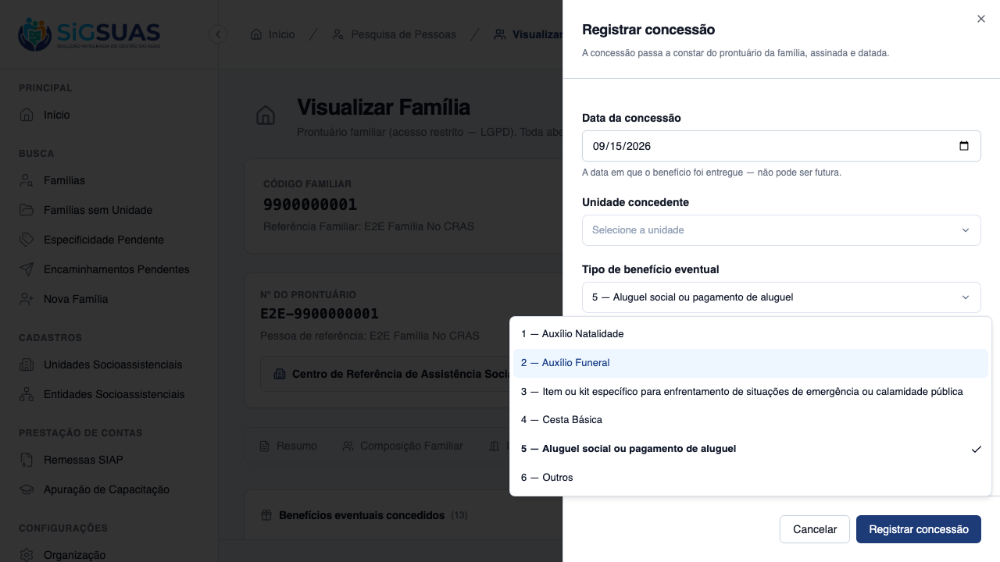
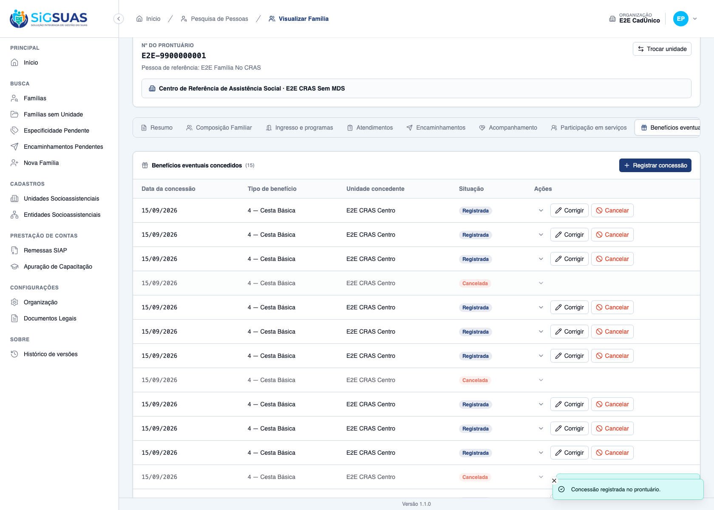
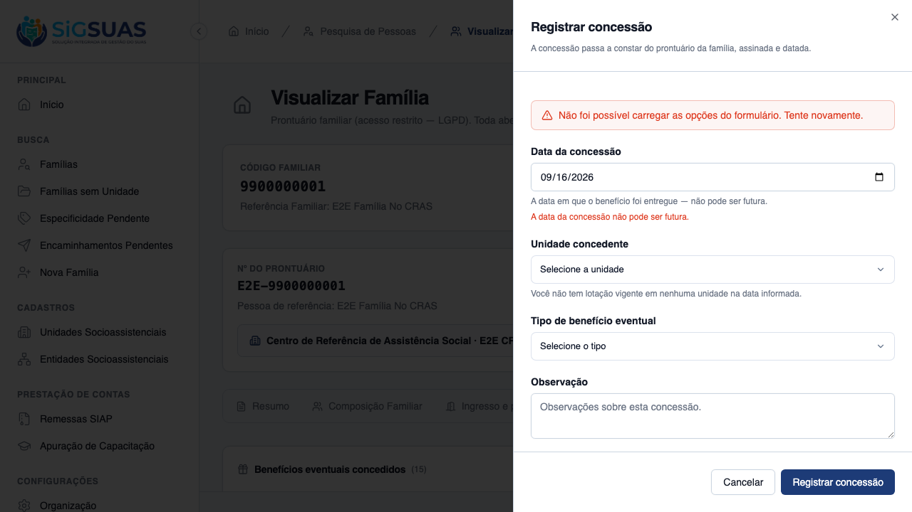
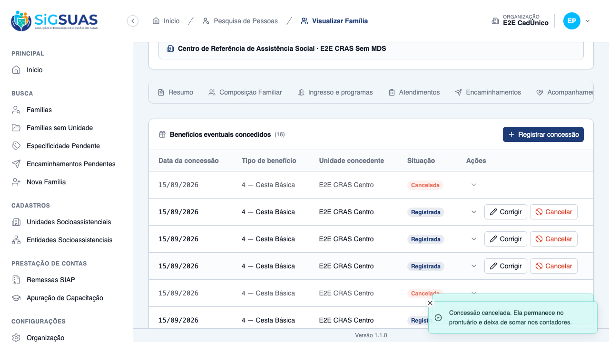

Quinze critérios de aceite (CA01–CA14, com o CA05b do tipo "Outros"). Seis evidenciados no navegador (CA01, CA02, CA03, CA05, CA06, CA07 e CA10, com sete prints) e nove cobertos pela suíte automatizada (CA04, CA05b, CA08, CA09, CA11, CA12, CA13, CA14). A suíte fecha com 28 testes e 160 asserções, em FamilyEventualBenefitTest, FamilyEventualBenefitLifecycleTest, FamilyEventualBenefitShowTest e a isolação de tenant. Os 8 cenários Playwright passam contra base recém-semeada e persistente, compartilhada com outros specs da fase. Nenhum critério em falha. O CA08 (aviso de remessa) fica fora do E2E por ausência de massa — ver Observações e ressalvas.
| CA | Critério | Situação | Evidência |
|---|---|---|---|
| CA01 | Registrar cesta básica (happy path) | ATENDIDO | Print + Pest |
| CA02 | Auxílio natalidade exige o registro de nascimento | ATENDIDO | Print + Pest |
| CA03 | Auxílio funeral exige o CPF da pessoa falecida | ATENDIDO | Print + Pest |
| CA04 | Pessoa falecida não precisa integrar a família | ATENDIDO (SUITE) | Pest |
| CA05 | Campos condicionais não aparecem (nem são aceitos) nos demais tipos | ATENDIDO | Print + Pest |
| CA05b | O tipo "Outros" exige a observação | ATENDIDO (SUITE) | Pest |
| CA06 | Repetição do mesmo benefício no mesmo mês | ATENDIDO | Print + Pest |
| CA07 | Data futura recusada | ATENDIDO | Print + Pest |
| CA08 | Retroativo em período já declarado | ATENDIDO (SUITE) | Pest |
| CA09 | Observação fora da trilha de auditoria | ATENDIDO (SUITE) | Pest |
| CA10 | Cancelar em vez de excluir | ATENDIDO | Print + Pest |
| CA11 | Acesso pela unidade que acompanha | ATENDIDO (SUITE) | Pest |
| CA12 | Negativa declara o motivo | ATENDIDO (SUITE) | Pest |
| CA13 | Isolamento entre municípios | ATENDIDO (SUITE) | Pest (TenantIsolation) |
| CA14 | Conceder não é encaminhar | ATENDIDO (SUITE) | Pest |
Dado que sou Operacional com add-on LGPD, lotado no "CRAS Centro", e que a família Silva é referenciada no "CRAS Centro", quando eu registrar a concessão de uma cesta básica com data de hoje, então a concessão é salva com status "registered" e consta no prontuário com a data, o tipo, meu nome e a data do lançamento.

Quando eu salvar um auxílio natalidade sem birth_registration_number, então recebo 422 com erro nesse campo, e nada é criado.

Quando eu salvar um auxílio funeral sem deceased_cpf, então recebo 422 com erro nesse campo, e nada é criado.
Dado um auxílio funeral de parente que não integra a composição familiar, quando eu informar o CPF da pessoa falecida, então a concessão é salva, e nenhuma pessoa, integrante ou vínculo é criado a partir desse CPF.
Sem prova visual: critério verificado pela suíte automatizada (ver anexo). Não exercitado na UI de propósito — o spec do teste nunca digita CPF na tela.
Dado que estou registrando aluguel social, quando eu abrir o formulário, então nem registro de nascimento nem CPF de pessoa falecida são apresentados, e se enviados assim mesmo, recebo 422 (D10).


Quando eu escolher o tipo "Outros" e salvar sem notes, então recebo 422 com erro no campo notes.
Sem prova visual: critério verificado pela suíte automatizada (ver anexo).
Dado que a família Silva já recebeu duas cestas básicas em agosto de 2026, quando eu registrar a terceira, então ela é salva normalmente, e as três constam como registros independentes.

Quando eu informar granted_on posterior a hoje, então recebo 422 e nada é criado.
max) — e, mesmo assim, o envio forçado é recusado com a mesma régua do 422 do backend, sem gravar nada.
Dado que a remessa da referência 07/2026 já foi gerada, quando eu registrar uma concessão com data de 18/07/2026, então a concessão É SALVA, e a resposta traz warning siap_remittance_regeneration_required com meta.exercise e meta.reference_month.
Sem prova visual: o banner eventual-benefit-remittance-warning só aparece quando existe uma remessa SIAP gerada para o mês da concessão, e a massa do E2E disponível a este spec não inclui uma remessa gerada (ver Observações e ressalvas).
Dado que corrigi a observação de uma concessão, quando eu consultar activity_log, então consta que notes foi alterada, com autor e data, e nem o conteúdo anterior nem o novo aparecem, e o mesmo vale para birth_registration_number e deceased_cpf (D08).
activity_log.properties e confirma que os três campos — notes, birth_registration_number, deceased_cpf — nunca aparecem no conteúdo logado, só o fato de terem mudado.Sem prova visual: critério verificado pela suíte automatizada (ver anexo).
Quando eu cancelar informando o motivo, então ela permanece visível marcada como cancelada, deixa de contar nos contadores do período, nenhuma rota aciona delete(), e o aviso de remessa é emitido também no cancelamento (D12).

Dado que sou Operacional lotado no "CREAS", que acompanha a família Silva, referenciada no "CRAS Centro", quando eu registrar uma concessão, então o registro é permitido, e a concessão pertence ao "CREAS".
VIA_UNIT_ASSIGNMENT/VIA_TRANSITION e VIA_FOLLOW_UP). O teste prova o registro pelo eixo da unidade que acompanha, sem reimplementar o terceiro eixo (US-ACOMP-06), que não é escopo desta fase.Sem prova visual: critério verificado pela suíte automatizada (ver anexo).
Dado que sou Operacional lotado apenas no "CRAS Rural", quando eu tentar registrar para a família Silva, então não é permitido, e a mensagem traz error_code estável e NÃO nomeia nenhuma unidade.
error_code estável, sem vazar o nome de nenhuma unidade na mensagem — o mesmo ponto único do FamilyAccessService usado pelo restante do prontuário.Sem prova visual: critério verificado pela suíte automatizada (ver anexo).
Quando eu alcançar família ou concessão de outro município, então recebo 404 (nunca 403).
X-Tenant-UUID apontando para tenant não vinculado ao usuário.Sem prova visual: critério verificado pela suíte automatizada (ver anexo).
Dado que registrei uma concessão de cesta básica, então nenhum encaminhamento é criado, e registrar encaminhamento para acesso a benefícios eventuais não cria concessão alguma.
Sem prova visual: critério verificado pela suíte automatizada (ver anexo).
O banner de aviso de regeneração de remessa exige uma remessa SIAP gerada para o mês da concessão retroativa — massa que não está disponível ao spec do E2E e que este dossiê não força a criar, para não inventar estado fora do que a HU pede montar. O caminho está coberto por teste de backend dedicado (o cenário "saves a retroactive grant in an ALREADY REMITTED month AND returns the warning").
A spec original sempre disse que o deceased_cpf vem íntegro "só na visualização do próprio registro", mas não previa a rota de leitura individual (show) até a integração. Sem ela, o formulário de edição do client/ preencheria o campo com a MÁSCARA vinda da listagem, e o "unmask" na hora de salvar enviaria lixo ao backend — corrompendo o CPF ou levando a um 422. Corrigido com a rota show no backend (commit 96318f4, api/) e o formulário de edição passando a carregar o registro por ela, nunca pelo item da listagem (commit 1f37365, client/).
O payload não devolvia autor, data nem motivo do cancelamento, e o template do bloco "Benefícios eventuais" do prontuário tinha um trecho pronto para exibir essas três informações na linha expandida — trecho que nunca era preenchido de verdade, porque a API nunca mandava os campos. Corrigido no commit 2abd505. O CA10 deste dossiê verifica apenas o que a HU exige exercitar na tela — motivo obrigatório, linha marcada como cancelada, ausência de ação de excluir — e não afirma que motivo/autor aparecem expandidos, hoje já corrigidos no backend e no template.
O CPF da pessoa falecida (Auxílio Funeral) não integra necessariamente a composição familiar — é dado de TERCEIRO. Ele é mascarado na listagem, e só sai íntegro na leitura individual (show) e no retorno da própria escrita, sempre para quem já passou pelo gate de acesso do prontuário. Ele fica, junto com notes e birth_registration_number, FORA da trilha de auditoria: o activity_log registra que o campo mudou, nunca o conteúdo, antes ou depois. Nenhum cenário deste dossiê digita ou exibe um CPF, real ou gerado — as capturas de CA02/CA03/CA05 mostram apenas o campo vazio ou a mensagem de erro.
PASS Tests\Feature\Api\Client\FamilyEventualBenefitLifecycleTest ✓ it NEVER leaks notes/birth_registration_number/deceased_cpf/cancel_… 0.36s ✓ it cancels keeping the row VISIBLE and marked, stops counting, warn… 0.06s ✓ it devolve quem cancelou, quando e o motivo no payload da concessao… 0.06s ✓ it never calls delete() nor forceDelete() through the cancel route… 0.05s ✓ it lets an Operacional lotado at the unit that FOLLOWS the family r… 0.05s ✓ it denies registering for a family outside reach, with a STABLE err… 0.05s ✓ it keeps social_unit_id as a SNAPSHOT after the family moves to ano… 0.05s ✓ it creates NO referral when registering an eventual benefit grant ( 0.04s ✓ it creates NO eventual benefit grant when registering a referral fo… 0.04s PASS Tests\Feature\Api\Client\FamilyEventualBenefitShowTest ✓ it returns the deceased_cpf INTACT on show while the SAME grant is… 0.07s ✓ it answers 404 when the grant belongs to ANOTHER family — scoped bi… 0.05s ✓ it answers 404 when the grant belongs to ANOTHER organization (RN13… 0.05s ✓ it answers 403 unit_not_assigned for a family of another unit — WIT… 0.05s PASS Tests\Feature\Api\Client\FamilyEventualBenefitTest ✓ it registers a cesta basica grant signed and dated, with status reg… 0.05s ✓ it refuses a birth grant WITHOUT birth_registration_number (CA02) 0.04s ✓ it refuses a funeral grant WITHOUT deceased_cpf (CA03) 0.04s ✓ it saves a funeral grant with a deceased CPF outside the family com… 0.05s ✓ it refuses deceased_cpf sent for a type that does NOT require it —… 0.05s ✓ it refuses the "Outros" type WITHOUT notes (CA05b) 0.04s ✓ it accepts THREE cesta basica grants for the SAME family in the SAM… 0.05s ✓ it refuses a future granted_on date, creating nothing (CA07) 0.05s ✓ it saves a retroactive grant in an ALREADY REMITTED month AND retur… 0.05s ✓ it clears the OLD type conditional fields when the type changes on… 0.06s PASS Tests\Feature\TenantIsolation\FamilyEventualBenefitIsolationTest ✓ it answers 404 — never 403 — for a family of ANOTHER tenant, on ALL… 0.06s ✓ it never leaks a grant of ANOTHER tenant through MY family uuid (RN… 0.05s ✓ it answers 404 when the grant belongs to ANOTHER family of the same… 0.05s ✓ it scopes the block by tenant_id even without the route — my listin… 0.05s ✓ it blocks the request when the X-Tenant-UUID points at a tenant the… 0.04s Tests: 28 passed (160 assertions) Duration: 2.10s
[globalSetup] Rate-limiter cache do Laravel zerado. Running 8 tests using 2 workers ✓ 1 [setup] › tests/auth.setup.ts:10:6 › autentica super admin (UI) e propaga cookies para o api-client (1.0s) [tenant-auth.setup] sessão de tenant pronta em /Users/binho/Projetos/esuas-all/e2e/.auth/tenant.json ✓ 2 [setup] › tests/tenant-auth.setup.ts:82:6 › autentica usuário do tenant (client) e propaga cookies para o api-client (1.4s) ✓ 3 [chromium-tenant] › tests/client/eventual-benefit-grant.spec.ts:160:7 › US-BENEF-02 — registro de concessão de benefício eventual (client) › CA01 — registra uma cesta básica, com data, tipo, unidade e assinatura (9.4s) ✓ 4 [chromium-tenant] › tests/client/eventual-benefit-grant.spec.ts:193:7 › US-BENEF-02 — registro de concessão de benefício eventual (client) › CA02/CA03 — os campos condicionais são exigidos, com erro no campo (11.2s) ✓ 5 [chromium-tenant] › tests/client/eventual-benefit-grant.spec.ts:227:7 › US-BENEF-02 — registro de concessão de benefício eventual (client) › CA05 — o campo condicional aparece no funeral e some no aluguel social (8.2s) ✓ 6 [chromium-tenant] › tests/client/eventual-benefit-grant.spec.ts:253:7 › US-BENEF-02 — registro de concessão de benefício eventual (client) › CA06 — repetir a mesma cesta básica no mesmo mês não é bloqueado (12.2s) ✓ 7 [chromium-tenant] › tests/client/eventual-benefit-grant.spec.ts:284:7 › US-BENEF-02 — registro de concessão de benefício eventual (client) › CA07 — data futura é recusada (8.4s) ✓ 8 [chromium-tenant] › tests/client/eventual-benefit-grant.spec.ts:303:7 › US-BENEF-02 — registro de concessão de benefício eventual (client) › CA10 — cancelar exige motivo, mantém a linha marcada, e não existe excluir (9.8s) 8 passed (1.0m)